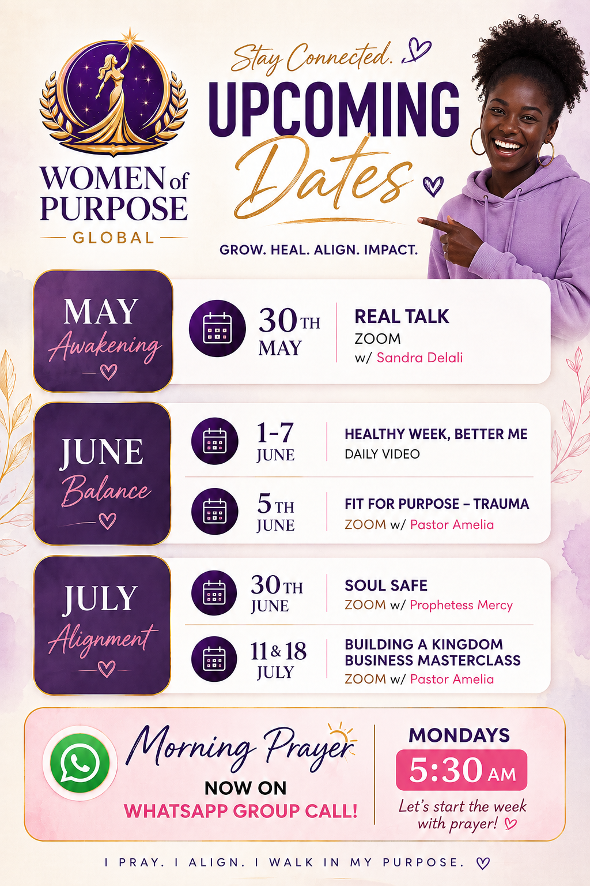

I'll generate a complete replacement **events.html** containing:
* Consistent header matching the rest of your website
* Updated navigation:
* Home
* Our Journey
* Events
* Testimonies
* Connect
* Women of Purpose branding
* Your new **Upcoming Dates** poster displayed prominently
* Responsive mobile design
* Footer with:
* "I PRAY. I ALIGN. I WALK IN MY PURPOSE."
* WhatsApp number
* Social media icons
* Uses:
```html

```
because your poster is stored in the main folder.